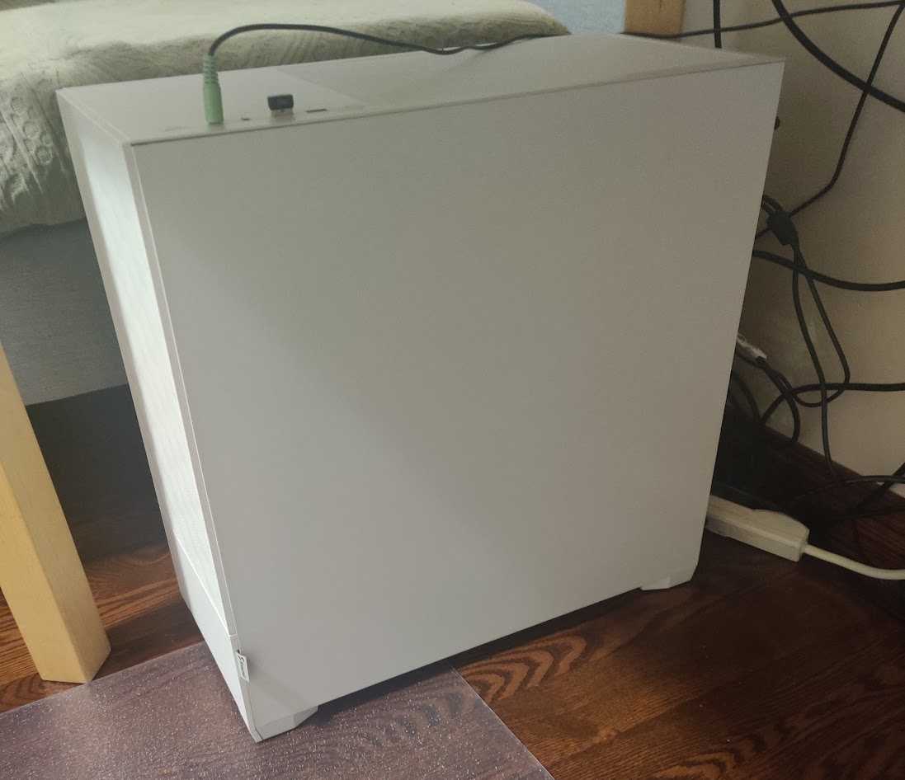
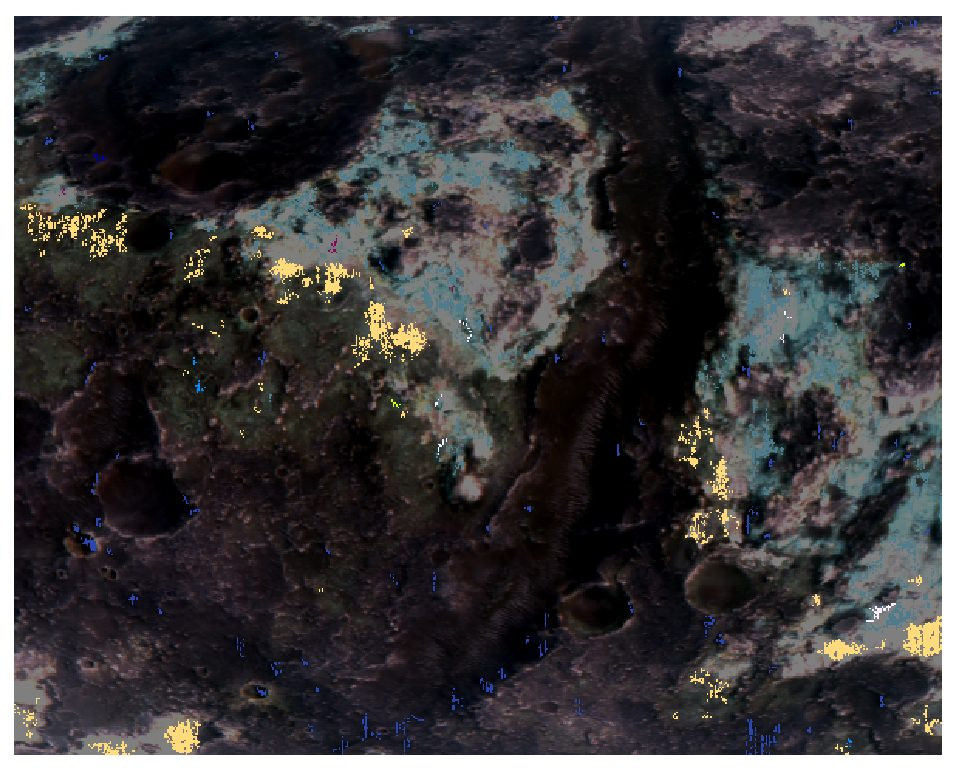

Off the clock
Fun
Games I made as a kid, a PC I put together, and side projects that don't fit under Projects.
01 · grade 7
Minecraft: Kill the Creepers
A browser VR game I built in grade 7 with A-Frame. Shoot the menu creeper to start, then take out the creepers with arrows before they reach your base. Best in a headset, but mouse-look and click works fine.
Opens full screen in a new tab. Sound was removed so it runs anywhere.
02 · grade 5
Brawl Stars, in Scratch
A little Scratch game based on the mobile game Brawl Stars. One of the first things I made.
03
PC build

| CPU | Ryzen 5 5600X |
|---|---|
| Cooler | Noctua air |
| GPU | GeForce RTX 3060 Ti |
| Memory | 32 GB DDR4 |
| Storage | 1 TB SSD |
| PSU | 800 W |
| Case | Fractal Design |
04
TerraMars AI Explorer
A dashboard for exploring Mars surface mineralogy. Pick from 35+ minerals detected by the CRISM imaging spectrometer and see where each one turns up: a gallery of the surface images, or every detection plotted on a real Mars basemap. Built in Python with Dash, Plotly, and Dash Leaflet on a dataset of real CRISM and HiRISE image IDs and coordinates.

github.com/jjkim08/terramarsai ↗ – runs locally; it is a Python server app, not a static page.